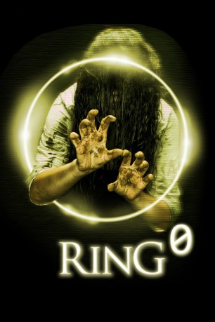

#4098 Ringu 0
 
 IMDB-Wertung: 6.1 / 10
IMDB-Wertung: 6.1 / 10  Metascore: 0
Metascore: 0 
Miyaji Akiko, Reporterin, möchte einen Fall klären bei dem ihr Mann vor ein paar Jahren ums Leben kam. Shizuko Yamamura, eine parapsychologisch begabte Frau hatte einige Journalisten getötet.Miyaji Akiko sucht die Tochter Sadako der Mörderin auf, die in einem unheimlichen Bann gefangen ist. Einige, die in ihrer Naähe sind, müssen sterben und sehen vor ihrem Tod ein Haus und einen Brunnen.
Jahr: 2000
Dauer: 98 Minuten
FSK: 16
Land: Japan Studio: Anolis EntertainmentTonspuren:
Untertitel:
Auflösung: SD (800x432) Größe: 1331 MB
Genre: Horror
Regisseur: Norio Tsuruta
Drehbuch: David Magee
Soundtrack:
Darsteller:
- Yukie Nakama als Sadako Yamamura
- Seiichi Tanabe als Hiroshi Tôyama
- Kumiko Asô als Etsuko Tachihara
- Takeshi Wakamatsu als Yûsaku Shigemori
- Ryûshi Mizukami als Wataru Kuno
- Kaoru Okunuki als Aiko Hazuki
- Yasushi Kimura als Togashi
- Mami Hashimoto als Joshikôsei
- Daisuke Ban als Heihachirô Ikuma
- Masako als Shizuko Yamamura
- Norio Murata als Gekidan'in
- Kôji Yano als Gekidan'in
- Hinata Takamine als Gekidan'in
- Tasuku Unô als Gekidan'in
- Akira Igarashi als Gekidan'in
- Kôji Nakano als Gekidan'in
- Kanji Watanabe als Gekidan Sutaffu
- Senzaburô Makimura als Gekidan Sutaffu
- Shûichirô Idemitsu als Gekidan Sutaffu
- Yoshiyuki Morishita als Gekidan Kenkyûsei
- Tsukasa Kimura als Gekidan Kenkyûsei
- Akane Tachibana als Gekidan Kenkyûsei
- Mahito Ôba als Takashi Yamamura
- Yôji Tanaka als Dansei Kyôyu
- Manabu Kadowaki als Miyaji no Kon'yakusha
- Chinami Furuya als Shôjo Jidai no Sadako
- Tsuyoshi Shimada als Shinbunsha Dôryô
- Yukimi Koyanagi als Kangofu
- Ikumi Takebe als
- Taeko Kodama als
- Makoto Yamagishi als
- Nami Asô als
- Izumi Itagaki als
- Yuki Moriwaki als
- Tento Matsui als
- Masafumi Nakai als
- Noriko Naruse als
- Yôko Nakatani als
- Takahiro Okabe als
- Tsutomu Yamamoto als
- Nozomi Sasaki als
- Takaki Kobayashi als
- Takashi Naha als
- Makoto Suzuki als
- Kôjin Gama als
- Masahiro Shimizu als
- Nobuyuki Ogawa als
- Hisatsugu Kohinata als
- Yasuyuki Hirano als
- Fumiko Ozaki als
Datei: X:\HD-Eastern-Collections\Ringu\Ringu 0 (2000, FSK16, 800x432).mp4 seit 20.07.2016
Festplatte: HD Eastern+Western
 Es gibt insgesamt 9 Filme in der Gruppe 'HD-Eastern-Collections\Ringu'
Es gibt insgesamt 9 Filme in der Gruppe 'HD-Eastern-Collections\Ringu'